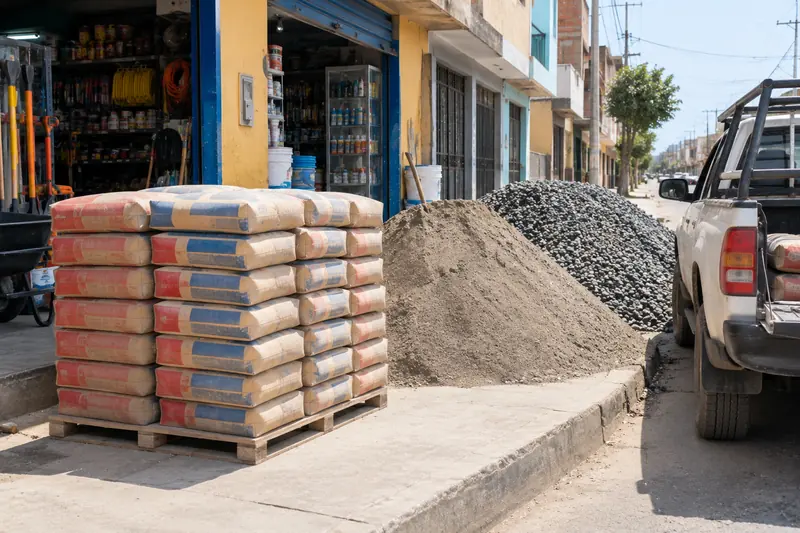

Pedido a domicilio de materiales pesados
Para cemento, arena, piedra chancada y otros productos pesados, no es necesario cargarlos uno mismo. Así funciona el pedido:

Pasos del pedido
- El cliente llama o escribe al 906 163 683 indicando el producto y la cantidad.
- En tienda se confirma el precio y la dirección de entrega dentro de Chiclayo.
- Se coordina el día y la hora del reparto.
- El pago se hace contra entrega, en efectivo o por Yape.
Este servicio se usa sobre todo para cantidades que no entran en una sola bolsa o que pesan demasiado para llevar en moto o a pie.